2 + 2[1] 410 / 3[1] 3.3333335 * (4 - 1)[1] 152^3[1] 8Introduction
Eunji Ha
May 28, 2026
Bio + information
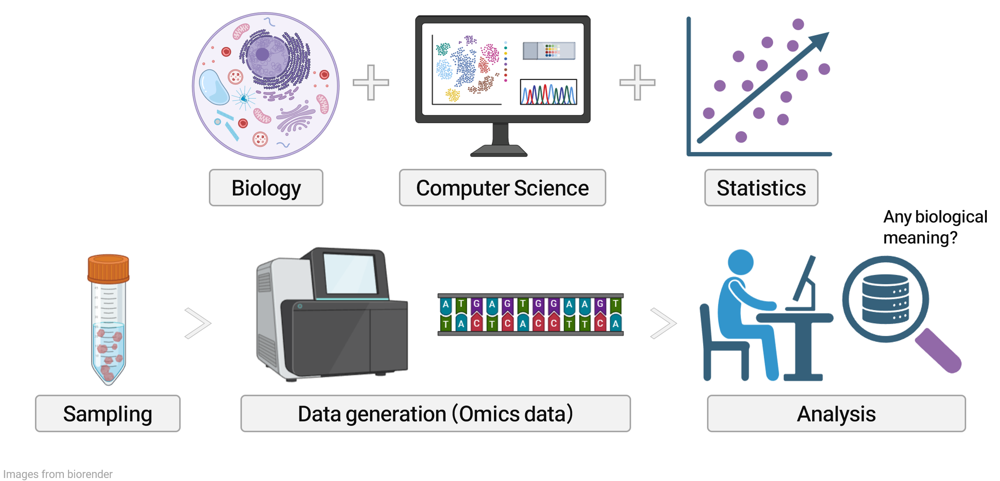
Bio ➡️ Human samples (with certain phenotypes)
Information ➡️ Data (Omics)
Omics data is generated by NGS
What is difference between Sanger Sequencing and Next-Generation Sequencing (NGS)?
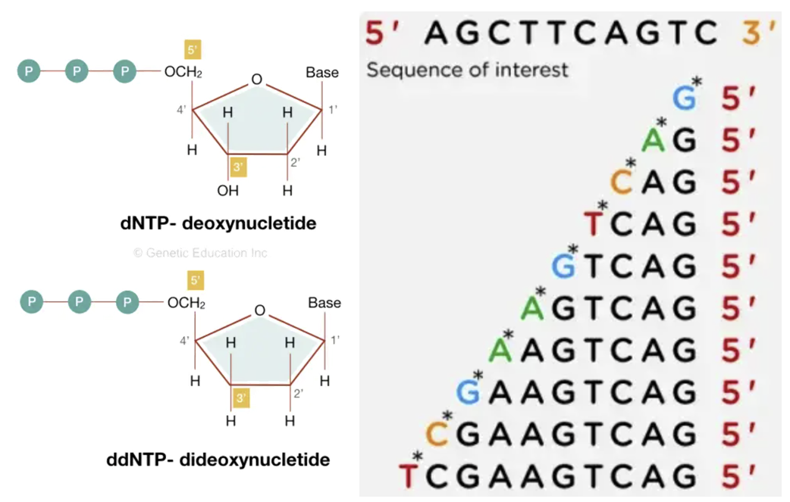
NGS: library preparation + sequencing by synthesis
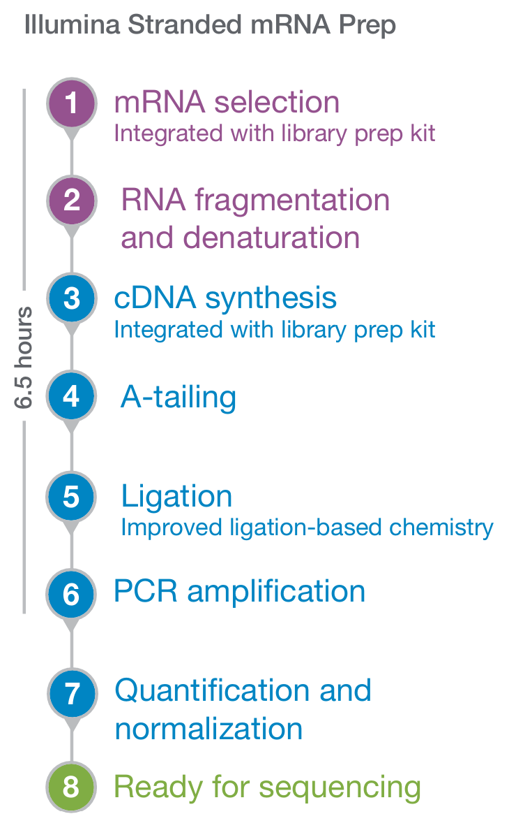
Library prep & bridge amplification
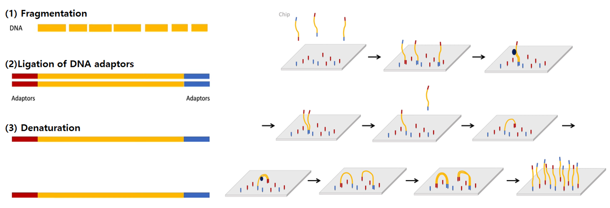
sequencing by synthesis (SBS)
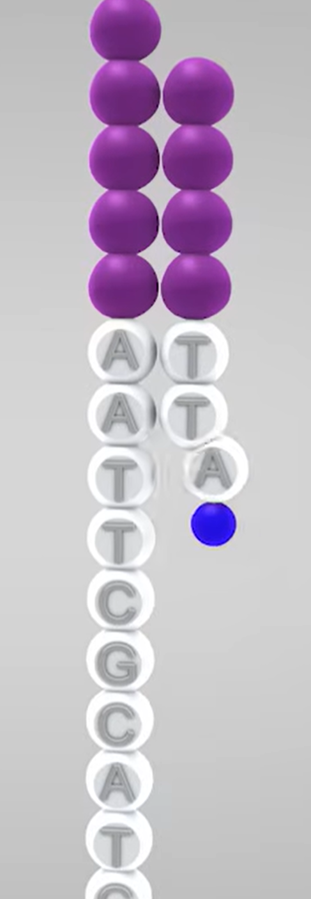
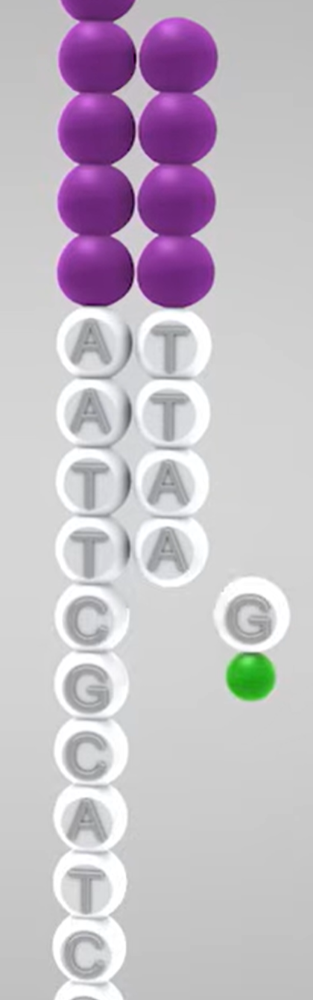
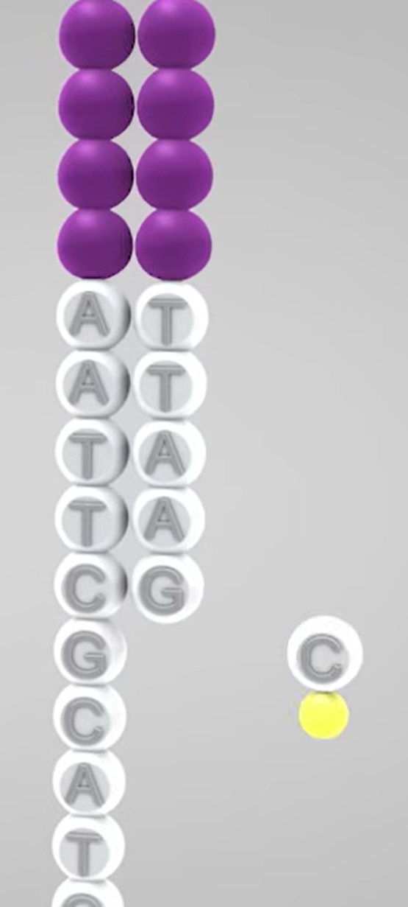
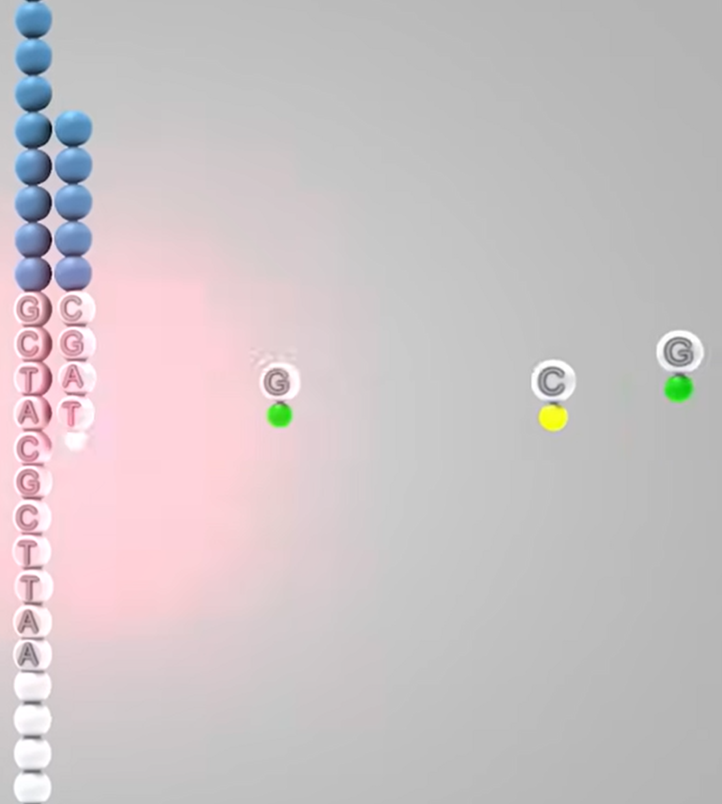
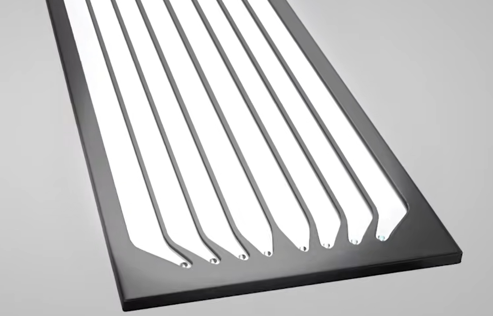
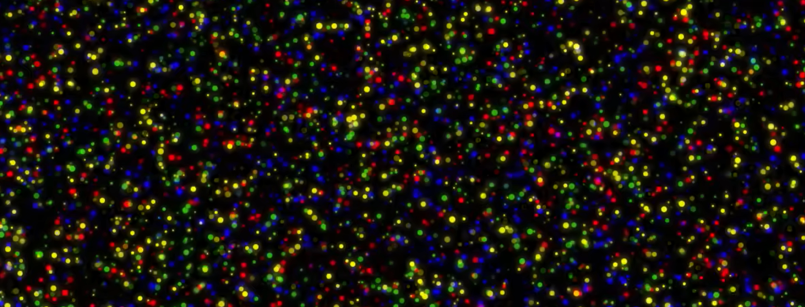
NGS library molecule: adapter + insert
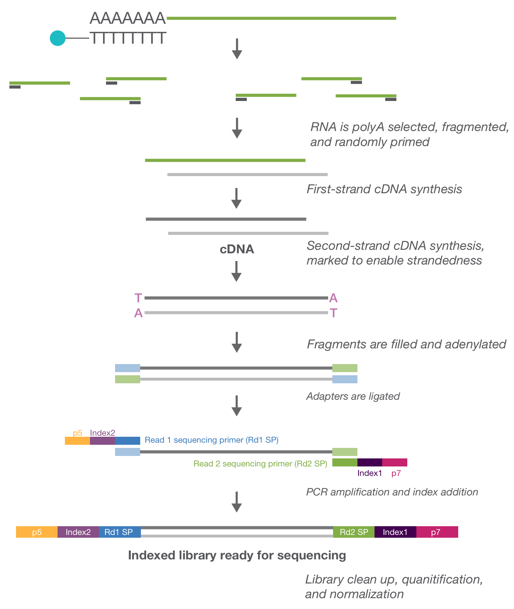
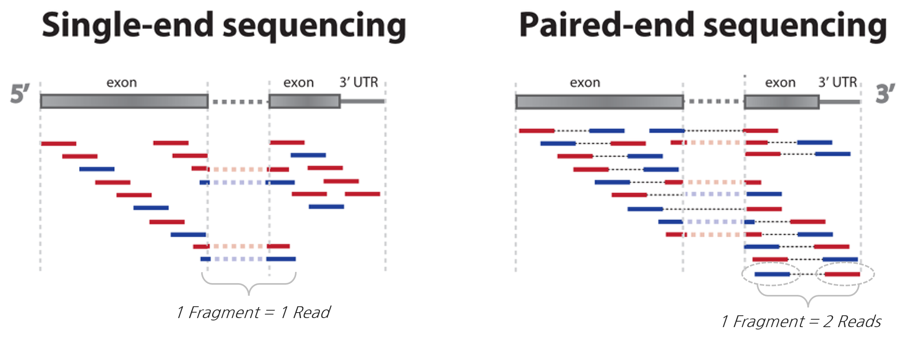
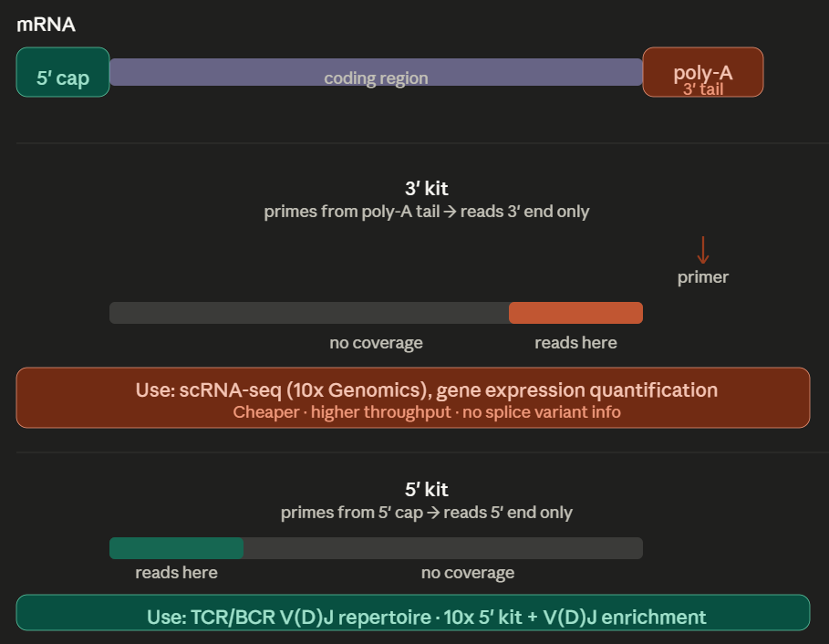
Why 3’ is commonly used:
When to use 5’ kits:
@SRR21484222.626.1 626 length=51 ← Read ID
GCCTTGGTGGTGAAATGGTAGACTGGAATTCTCGGGTGCCAAGGAACTCCA ← Sequence
+SRR21484222.626.1 626 length=51 ← Description
F:FFFFFFFFFFFFFFFFFFFFFFFFFFF:FFFFFFFFFFF:,FFFFFFFFF ← Base call quality (Phred score)\(Q = -10 \log_{10} P\)
| Phred Score | Error rate | Base call accruary |
|---|---|---|
| 10 | 1 in 10 | 90% |
| 20 | 1 in 100 | 99% |
| 30 | 1 in 1,000 | 99.9% |
| 40 | 1 in 10,000 | 99.99% |
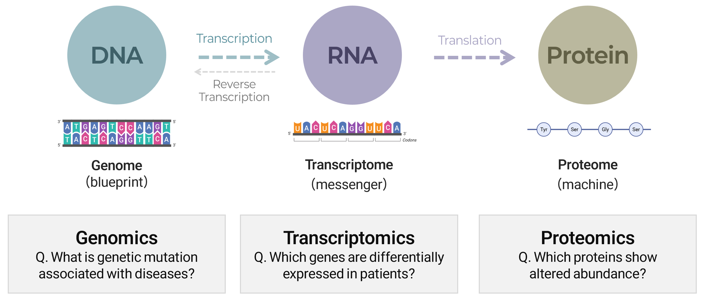
We will focus on transcriptomes (RNA-seq data)
✅ A single NGS experiment ➡️ GB to TB of information …far beyond what traditional lab methods can handle
✅ Rapidly declining NGS costs ➡️ exponentially growing data volume
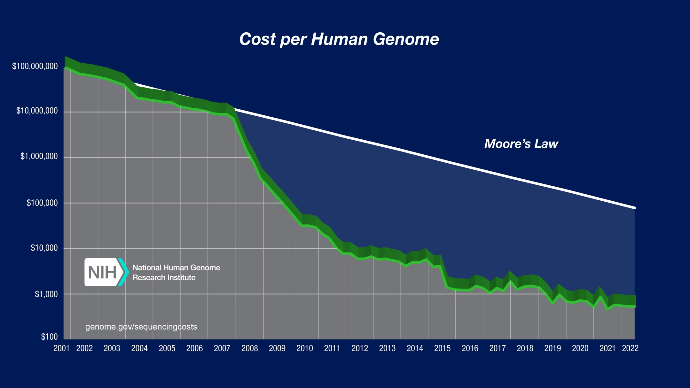
technology that measures the average gene-expression levels across millions of cells within a tissue
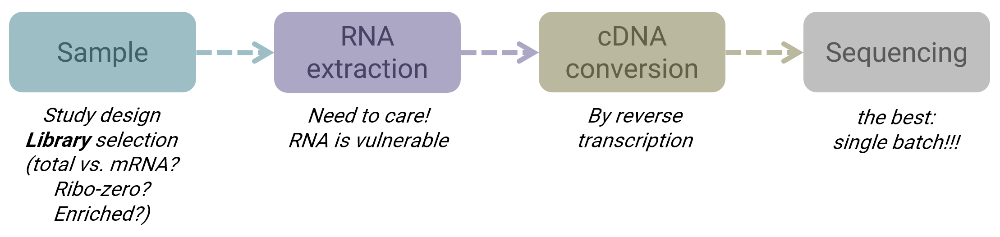
Excel에서 데이터 정리 → SPSS에서 분석 → 결과를 Word에 복붙 → 리뷰어 코멘트 → 처음부터 다시...✅ Comprehensive statistics beoynd Excel
✅ Free & Open-Source >> SPSS
✅ Publication-Quality Visualization
✅ Biological & Biomedical Packages
The Comprehensive R Archive Network (CRAN)
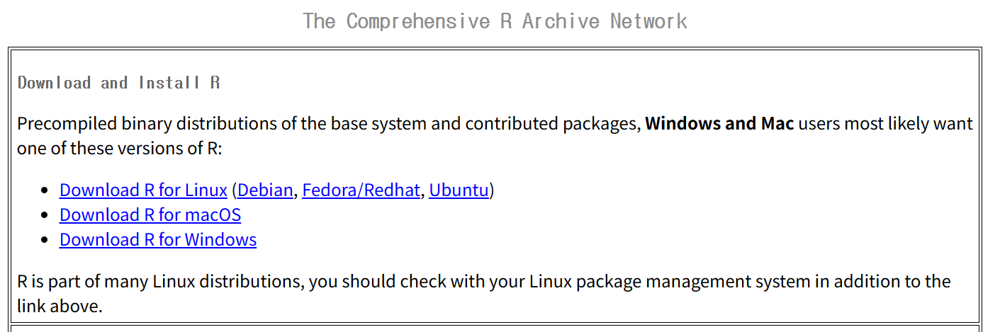
IDE (Integrated Development Environment) for R
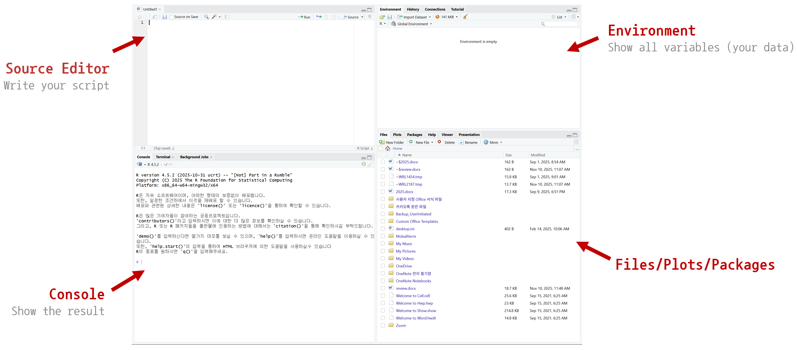
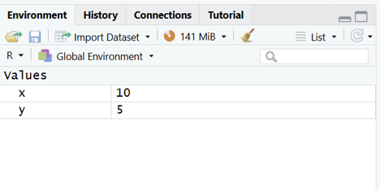
Please submit a snapshot of your screen